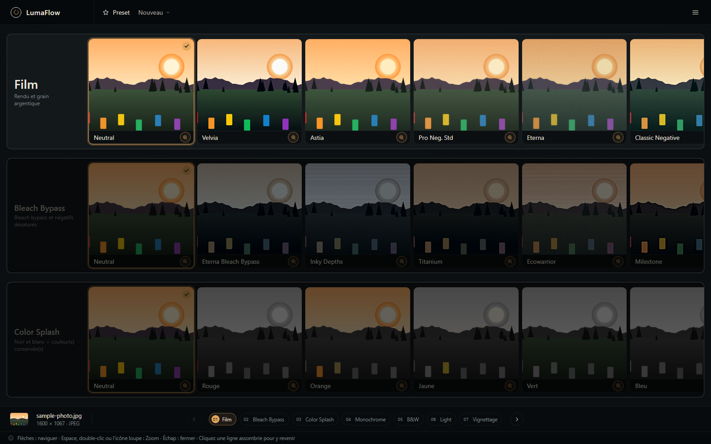
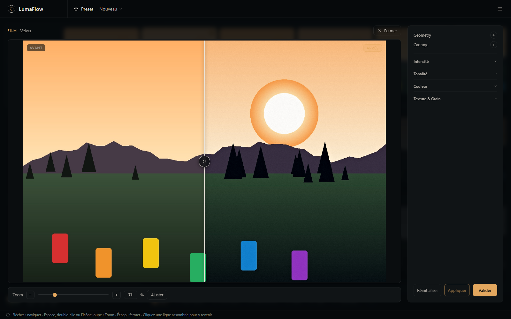
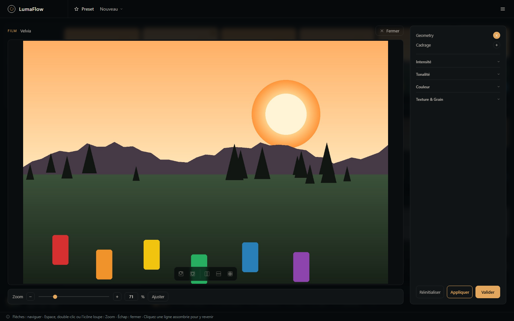
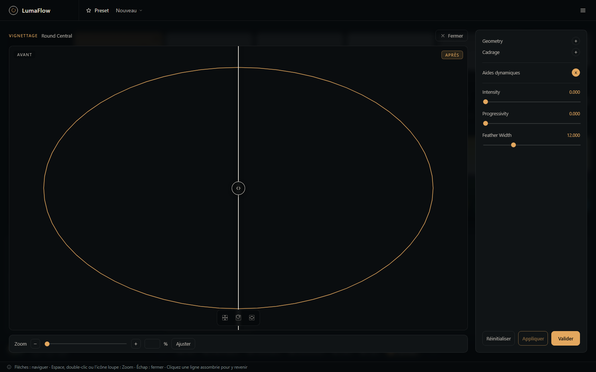
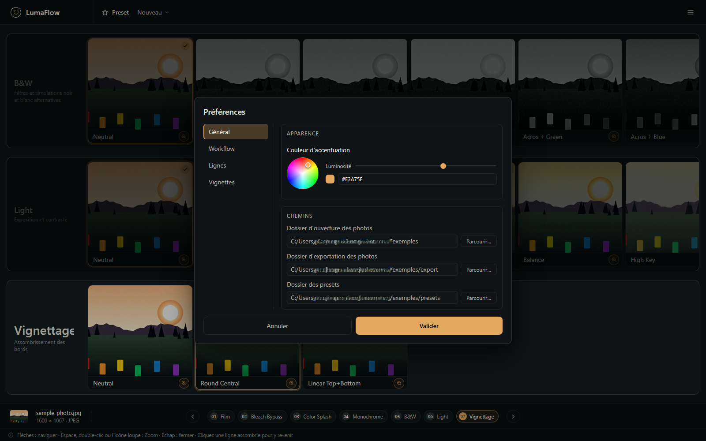

3. Features
3.1 General interface
At the top
The logo, a preset selector (a previously saved recipe — "New" resets to the neutral settings), and the main menu (☰), which groups Open/Export a photo, Open/Export a recipe, and Preferences.
Once a photo is open, the central area becomes the filmstrip: a vertical column of processing steps, each showing its available thumbnails in a horizontal scroll.

At the bottom
- a status bar with the source photo's thumbnail and metadata (name, dimensions, format), numbered pills to jump directly to any step, and previous/next buttons;
- a reminder of the keyboard shortcuts: Up/Down arrows to change step, Left/Right arrows to change thumbnail within a step, Space/double-click/magnifier icon to open Zoom, Esc to close.
3.2 The workflow: 9 steps
The standard pipeline (defined in config_workflow.json, never hardcoded) has 9 steps. Two of them (Geometry and Framing) aren't shown as filmstrip rows but stay editable from any other step (see §3.4) — the following 7 rows are directly visible and navigable:
| # | Step | Role | Presets |
|---|---|---|---|
| — | Geometry | Manual rotation and free 4-corner perspective correction | (editable only from another step) |
| — | Framing | Free cropping with composition guides (rule of thirds, golden section/spiral, center lines, diagonal, pyramid, compound curve, symmetry) | (editable only from another step) |
| 1 | Film | Film rendering and grain — parametric grading engine shared by the Fujifilm looks | Neutral, Velvia, Astia, Pro Neg. Std, Eterna, Classic Negative, Classic Chrome, Rizzle Clicks, Glacier Blue |
| 2 | Bleach Bypass | Same engine, desaturated bleach-bypass-style negative presets | Neutral, Eterna Bleach Bypass, Inky Depths, Titanium, Ecowarrior, Milestone, Loki, Sunset Strip, Quicklime |
| 3 | Color Splash | Desaturates the whole image except up to 3 simultaneous hue ranges kept in color, adjustable via a ring-shaped selector | Neutral, Red, Orange, Yellow, Green, Blue, Purple |
| 4 | Monochrome | Duotone: strips all color, then colorizes the luminance with a single tint | Neutral, Red, Sepia, Yellow, Green, Blue, Purple |
| 5 | B&W | Alternative black-and-white simulations (colored filters, Kodak/Ilford emulations) | Neutral, Acros, Acros + Yellow/Red/Green/Blue, Kodak T-MAX 3200, Kodak Tri-X, Ilford FP4 |
| 6 | Light | Exposure and contrast — parametric engine (~31 fields), 4-zone tone curve, bloom, protected texture, and a subject/background split via a polygon mask | Neutral, Low Key, Dramatic, Soft, Balance, High Key |
| 7 | Vignetting | Edge darkening, shape editable directly on screen | Neutral, Round central (ellipse), Linear (band) |
On each row, a single click on a thumbnail selects and applies the corresponding preset immediately — without opening a detailed view. To fine-tune a preset (individual sliders, interactive editing), open its Zoom: the magnifier icon at the bottom of the thumbnail, a double-click on the already-active thumbnail, or the Space bar.
3.3 Zoom mode: comparison and detailed settings
Zoom opens a large Before / After comparator with a draggable split handle, optical zoom and pan (mouse wheel or click-and-hold zones on the edges), and — on the right — a settings panel grouping the sliders, color wheels and switches specific to the current row's addon.

Each setting can be reset, applied (preview without confirming) or confirmed (saved to the session). Sliders bounded to 0/1 appear as switches; discrete-choice settings (e.g. a B&W filter's color/strength) appear as labeled buttons rather than raw numeric values.
3.4 Cross-row corrections: Geometry / Framing
From the Zoom of any visible row (Film, Bleach Bypass, Color Splash, Monochrome, B&W, Light, Vignetting), two switches at the top of the panel — Geometry and Framing — give access to rotation/perspective correction and cropping without leaving the row you're editing: these are real pipeline steps, executed normally, but the interface makes them accessible as an overlay rather than as separate filmstrip rows.

3.5 Interactive editing directly on the image
Several settings are edited with the mouse, directly on the preview, rather than with a slider:
- Geometry: rotation handle and 4 perspective-correction corners.
- Framing: frame resize handles, with the chosen composition guide overlaid.
- Subject/Background Mask (Light step): drawing a polygon outline (vertices, edge midpoints, feather halo) to apply different settings to the subject and the background.
- Vignette shape: movable center, radii/offsets, rotation — for the ellipse (Round central) as well as the band (Linear).

3.6 Recipes: save, load, reapply
The ☰ > Photo menu gives access to Open/Export for an image; the ☰ > Presets menu and the header selector give access to Open/Export for a recipe (a .json file capturing every setting applied).
Loading a recipe onto a different photo triggers, when needed, non-blocking warnings:
- incompatible proportions — the recipe was created for a different image aspect ratio; each affected step (Geometry/Framing) is adapted or applied as-is;
- out-of-range settings — automatically corrected to the nearest valid value;
- a thumbnail disabled since (via Preferences > Workflow) — replaced with its row's neutral setting.
The preset shown in the header selector is automatically reapplied to every newly opened photo: working through a whole series of images develops all of them in the same style, without having to reselect anything. The selector therefore always describes what is actually applied — the "New" entry brings the image back to its neutral state.
3.7 Batch processing
The ☰ > Batch menu opens a dedicated window that applies a recipe to entire lists of images without opening any of them. Each batch is a block with three pieces of information — a multi-file selection (same formats as opening a photo, RAW included), a .json preset, an output folder — and you can add as many as you like, with different presets and destinations.

- Two-scale progress — a horizontal gauge at the top of the window for the overall progress (across all batches), and a vertical gauge to the right of each block for that batch's own progress, each with its own percentage.
- Log — one line per image, with the written file's name on success or a plain-language reason on failure; successes and failures are distinguished by symbol as much as by color. It stays available after processing ends.
- A failing file stops nothing — the faulty image is dropped, and processing moves on to the next one immediately.
- Stop on demand — while running, "Run" becomes "Stop" and ends processing after the current image.
- Unique output names —
<source>-<preset>-<YY-MM-DD-HH-MM-SS>.<ext>, so a batch never overwrites the result of an earlier one.
→ Batch processing page — full details
3.8 RAW photos
In addition to JPEG/PNG, LumaFlow opens Canon (.cr2), Nikon (.nef) and Sony (.arw) RAW files directly: decoding and demosaicing via rawpy, white balance applied at decode time, safe initial development, and EXIF orientation extraction.
3.9 Preferences
The ☰ > Preferences menu opens a dialog with 4 tabs:

- General: accent color for the whole interface, default folders (open, export, presets), default export JPEG quality.
- Workflow: enable/disable and reorder each row's thumbnails (the rows themselves stay fixed); import/export of the
config_workflow.jsonfile. - Rows: filmstrip spacing and margins, opacity of inactive rows.
- Thumbnails: colors of the guiding aids (limits/overlays shown during interactive editing) and min/max bounds of the optical zoom.
3.10 Keyboard shortcuts
| Key | Action |
|---|---|
| ↑ / ↓ | Change step |
| ← / → | Change thumbnail within the active step |
| Space, double-click, or magnifier icon | Open Zoom on the active thumbnail |
| Esc | Close a menu or Zoom |
| Click on a dimmed row | Jump back to it directly |